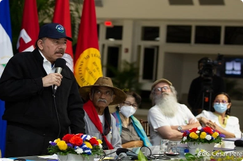
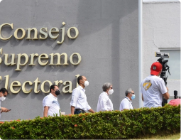

DESTACADOS: OEA · Enrique Bolaños Geyer · represión · elecciones nacionales · 25 aniversario · EEUU · Ley Renacer
Daniel Ortega inventó un "tío abuelo obispo" para atacar con virulencia a la iglesia
Su hermano Humberto Ortega lo desmiente : Marco Antonio Ortega no era un obispo "complice", si no el abuelo que abogó por su padre Daniel Ortega en 1934
EMERGENCIA CORONAVIRUS
Covid-19 en ascenso: Minsa admite más de 200 contagios en la última semana
POLÍTICA
Victoria Cárdenas y Berta Valle exigen ver a Juan Sebastían Chamorro y Félix Maradiaga
POLÍTICA
OEA condena con 26 votos al arresto de opositores y exige su liberación inmediata
El Consejo Permanente aprueba resolución por amplia mayoría; únicamente cinco países miembros se abstuvieron y tres votaron en contra
POLÍTICA
La fórmula de Daniel Ortega para anular a la oposición de la competencia electoral
Fiscalía y Policía usan "Ley de Soberanía" para detener a opositores, y los encarcela por noventas días con el pretexto de "investigarlos"
NACIÓN
Policía secuestra a opositores Dora M. Téllez, Ana M. Vijill, Suyen Barahona Y Hugo Torres
POLÍTICA
"El respeto a los derechos humanos está por encima de cualquier principio de no injerencia"
Expresidente constarricense Radael Calderón destaca histórica resolución de cancilleres de la OEA que condenó a la dictadura de Somoza en junio de 1979
POLÍTICA
Régimen señala a miembors de la OEA de "cabildear" para interferir en los asuntos de Nicaragua
NACIÓN
Daniel Ortega entre los 37 "depredadores de la libertad de prensa" 2021, según RSF
NACIÓN
Precandidatos presidenciales opositores de mantienen en la carrera electoral
